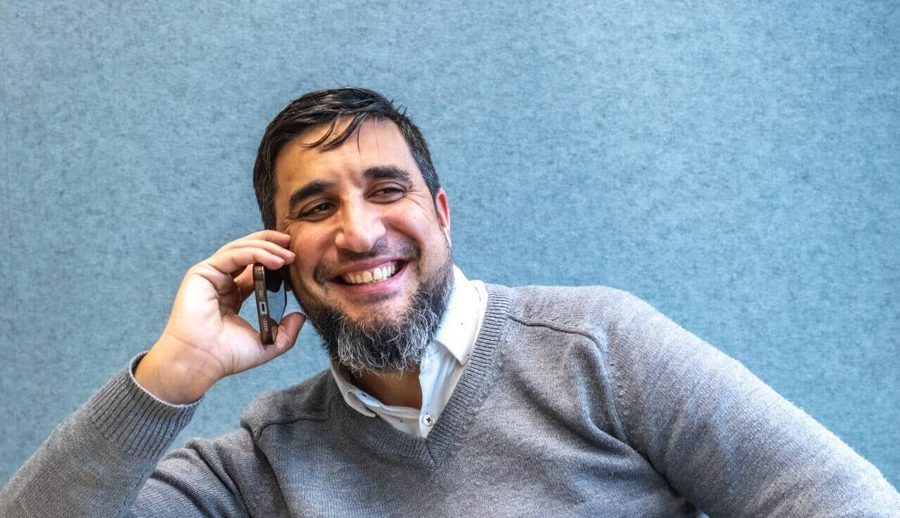
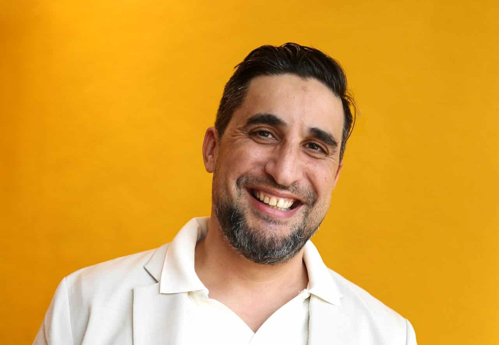

Teamlid
Youssef Nouijeh
Mijn naam is Youssef Nouijeh en ik werk sinds januari 2021 bij DIS Group als Manager Functioneel Beheer.
In de afgelopen 20 jaar heb ik veel ervaring opgedaan met ERP-applicaties, waarvan zo’n 10 jaar specifiek als functioneel beheerder van Business Central. Die combinatie van technische kennis, procesinzicht en samenwerking met klanten en collega’s neem ik elke dag mee in mijn werk bij DIS.
Wat mijn werk leuk en uitdagend maakt
Wat mijn werk zo leuk maakt, is vooral de afwisseling. Geen dag is hetzelfde. Naast de aansturing en ontwikkeling van de teamleiders met hun teams houd ik me ook bezig met procesverbeteringen, organisatiegroei en het versterken van de samenwerking tussen de verschillende disciplines binnen DIS Group. Tegelijkertijd vind ik het belangrijk om ook inhoudelijk betrokken te blijven bij de operatie. Juist die combinatie van strategie, persoonlijk contact en inhoud geeft mij veel energie.
Kwaliteit en klanttevredenheid spelen een grote rol. Regelmatig ga ik in gesprek met klanten om onze dienstverlening te evalueren en te kijken waar we kunnen verbeteren. Dat contact vind ik ontzettend waardevol, omdat het ons helpt om scherp te blijven en continu stappen vooruit te zetten.
Mee groeien met het bedrijf
Werken bij DIS voelt voor mij als een bijzonder avontuur. Toen ik hier begon, zat ik alleen in een Regus-kantoortje. Sindsdien hebben we elk jaar mooie stappen gezet en is DIS Group blijven groeien. Vanuit Conrad en Edwin heb ik altijd veel vertrouwen, verantwoordelijkheid en ruimte gekregen om mee te denken én mee te bouwen aan de organisatie. Dat vertrouwen motiveert mij enorm.
Daarnaast ervaar ik binnen DIS een manier van samenwerken die je niet overal tegenkomt. De sfeer is open, betrokken en informeel. We werken hard, maar maken ook tijd voor ontspanning en plezier met elkaar. Bij nieuwe collega’s kijken we niet alleen naar kennis en ervaring, maar vooral ook naar wie iemand is en of diegene past binnen het team en het DIS-DNA. Iedereen helpt elkaar en nieuwe collega’s voelen zich snel thuis.
De cultuur binnen het bedrijf is geen marketingverhaal, maar het leeft echt binnen de organisatie, dat is bijzonder. Die betrokkenheid, waardering en samenwerking voel je elke dag weer.
Neem contact op
